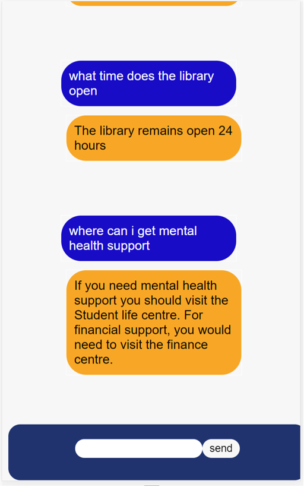
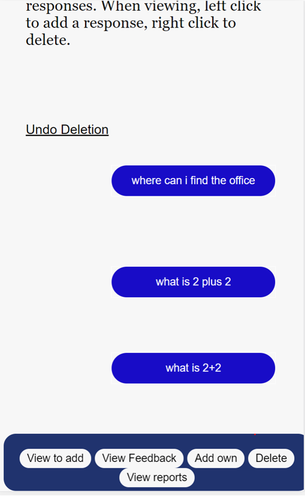

SHEP chatbot
Taking a step back from self learning AI, we have made the SHEP chatbot. Self learning AI poses many problems, such as learning
off of the wrong information. The spread of fake news is a major problem in todays society. Having a self learning chatbot is fun
and in some makes things better but can make things a lot worse. Take the microsoft AI which was converted to Nazism by internet trolls.
SHEP chatbot was a lockdown project in 2020, while the world stayed indoors to avoid Covid-19. While sitting at home assesing problems, we found
a big issue with universities. Students do not always know where to go to find information, and have to wait a while to get a reply back from university staff.
This is equally as frustrating for staff who have to answer the sae question multiple times year after year.
What if we could provide a 24/7 service to answer all questions students have? Meanwhile taking feedback to alert university staff the importance
of student concerns. SHEP chatbot was developed!
What does it do?
The user will use a client embedded on an html page using javascript. This will communicate with the server set up on SHEP. The user will enter there message.
This is then sent to the server for processing. Firstly it is split down into meaning, sentences are broken up and analysed seperatly, conjunction is broken down into seperate comments and an algorithm asseses whether the student
is making a statement or a question. Statements are logged and a message "thank you for your feedback" is returned. The admin can read this feedback and see what is the most popular.
If it is a question then it breaks down the language and tries to find an answer (or answers) which match, or have similar meaning.
The user has the chance to give feedback on similar meanings so the bot knows how to answer for next time. There is also a report false information
option if there are issues. If no response is found, or the user gives negative feedback to an answer, ten the questions are logged and the admin can add them.

The admin have their own interface where they can securely log in and add answers. This would be managed by staff. The Admin can simply press the
message they wish to respond to and type the answer to the question. They can right click the message if they wish to delete it. This could be becuase
the question is a silly question put there by trolls.
